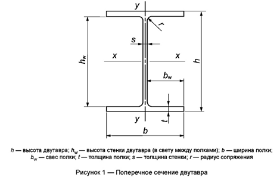
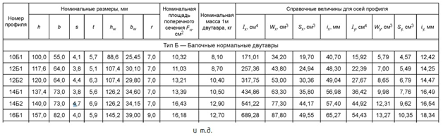
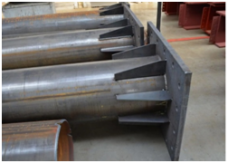
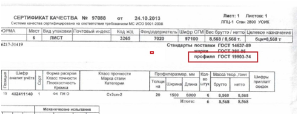

Монтаж металлоконструкций: расчеты по массе и спецификациям

Сложность в расчете металлоконструкций состоит в огромном разнообразии сортамента. Сортамент – это перечень металлопроката, который разделен на группы по геометрическим размерам, форме, массе, свойствам и технологическим особенностям. Сортамент на виды металлопроката указан в ГОСТ.
Обширный список ГОСТ пугает и путает инженера, но на самом деле необходимо запомнить простое правило: массу готовой конструкции принимаем по паспорту. А конструкцию, которую изготавливает организация, раскладываем и считаем детально, как конструктор. Ниже мы проанализируем разницу сортамента по ГОСТ 35087-2024 «Двутавры стальные горячекатаные».
Рассмотрим на примере схемы стального двутавраИсходное изображение недоступно. Адрес источника


В таблице видно, как от небольшого изменения высоты стенки меняется вес одного метра, поэтому маркировку профиля очень важно применять полностью, обращая внимание на все цифры.
Чтобы корректно рассчитать общий тоннаж металлической конструкции, его необходимо рассмотреть внимательно и разложить на детали, как конструктор.
Рассмотрим на примере колонны круглого сеченияИсходное изображение недоступно. Адрес источника

На фото изображена колонна круглого сечения:
- основа – труба стальная. Чтобы определить ГОСТ, в котором указан вес, необходимо посмотреть паспорт качества на трубу;
- лист стальной разной толщины. ГОСТ определяем так же, как и с трубой.
Рассчитываем площадь каждого элемента отдельно и умножаем на вес по сортаменту, который относится к каждому элементу (труба или лист), таким образом мы узнаем общий вес конструкции.
Как указать ГОСТ металлопроката в паспорте на материал Исходное изображение недоступно. Адрес источника

Если приобрели готовое изделие, то его массу можно взять из паспорта. При этом дополнительные расчеты не нужны.
Как корректно рассчитать тоннаж металлоконструкций
Для корректного расчета тоннажа металлоконструкции необходимо рассчитать вес каждой составляющей детали и проверить сортамент материала по ГОСТ.
Теперь самое время проверить свои знания по всем темам курса. Ниже эксперты школы подготовили для вас интерактивный кроссворд. Он поможет вам закрепить полученный материал и успешно сдать финальный тест.